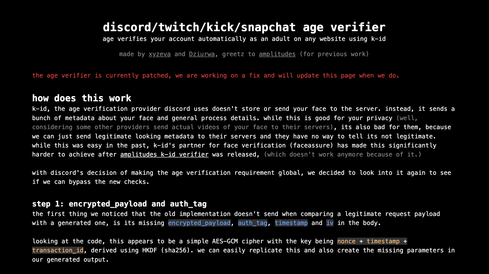
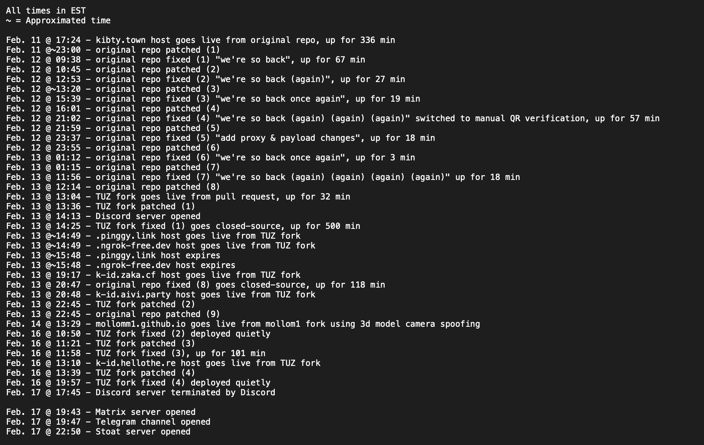
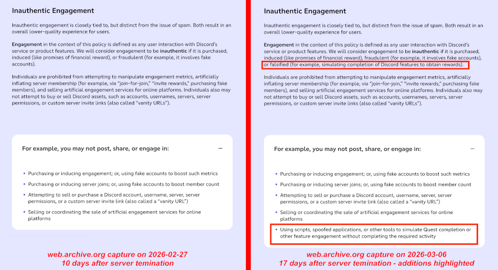

Discord, online privacy, and who should be protecting the kids
This is my position on the current state of Discord and age verification. Statements without linked sources are thus opinions or anecdotes based on personal experiences.
Early this February, Discord announced that within a month, they would begin enforcing age-group-based restrictions for all users on their platform. Any user attempting to access stages, as well as restricted channels, servers, or commands would have to verify that they are an adult to continue. To do so, Discord offered two options: either upload a picture of a photo ID or perform a face scan. Both verification methods were administered through K-ID, a third-party age assurance tool already used by several other online services, including Twitch, Kick, and Snapchat.
On the surface, this looks pretty great. Discord has a reputation of being infested with predators, pedophiles, pornography, and other hateful or offensive content. With almost a quarter of teenagers in the US having used Discord before, many children have likely to be exposed to harmful content and people. Now, Discord claims that age-based restrictions will be effective and necessary to combat these issues. However, not only are age-based restrictions like K-ID simply ineffective, they also open vulnerabilities to data breaches, set a harmful standard for digital privacy, and dismiss the roles of parenting in child safety.
The threat of global mandatory age verification has been especially well-demonstrated by the UK's and Australia's recent age verification laws, which seem to put control of internet and social media usage in the hands of governments and third-party age assurance companies. This not only de-anonymizes the internet, threatening journalists among others who depend on fundamentally anonymous internet access, but also normalizes the act of submitting highly personally identifiable data to corporations. This data can be breached and stolen by malicious hackers, or handed over to governments to surveil and violate the privacy of citizens.
By patching up dangers on the internet with age checks, we convince ourselves mistakenly that children will be safe from online threats. But when you put up a wall, people will find a way around it. Bypassing age verification is currently extremely easy (more later), and users will continue to hack their way around as long as age checks exist. This isn't even considering the black markets of adult-verified accounts that exist and will continue to emerge. Furthermore, we are ignoring a far more effective method of keeping children safe from online threats that doesn't come at the cost of everyone's privacy: parenting. It's true that young children shouldn't have free rein on the internet, especially in spaces with adults, but parents need to be the authority that protects their child from the internet, not governments or companies who gain power or profit from collecting, using, and selling personal data.
the age verification arms race begins
Two days after Discord's initial announcement, on February 11, evaxyz and Dziurwa released their first version of an age verification bypass. It exploited K-ID's on-device face scan by submitting a fake payload with identical encryption and authentic-looking metadata in place of an actual selfie's data.

It worked for several hours before it was first patched by K-ID. Xyzeva and Dzuirwa quickly fixed the verifier, which was patched again an hour later. This back-and-forth repeated until the duration of each fix was just a few minutes. In part due to the attention garnered by No Text To Speech's Youtube video, xyzeva's site reached over 2 million visits in just a short time. However, waging this battle of attrition was not sustainable.
a view from the inside
Since the beginning, xyzeva's code was entirely open source. K-ID could have put a scraper on the repository or simply assigned an employee to keep an eye open, and they probably did. To combat this, TheUnrealZaka forked the repository, closed the source, and deployed a new fix. For over 8 hours, Zaka's closed-source fix worked without being patched.
With dozens of GitHub issues and comment threads obfuscating the working bypass, a Discord server was formed to streamline communication from bypass devs to users who wanted their accounts verified. As early members, some of us were granted admin permissions from the owner to write FAQs and maintain the server.

For the next few days, we continued our back-and-forth against K-ID, releasing fixes and waiting for the patch to come. The server was also rapidly growing at a rate of over a hundred new members a day, and Zaka's website was beginning to get overloaded with visits, so I cloned his repo to host a mirror site on my domain. Later, we would deploy yet another mirror to spread out the load.
there will always be a workaround
Soon enough, K-ID released a substantial fix that pretty much killed the exploit we were using. To the rescue came a bald man. He was nothing more than a rigged-up 3D model of a middle-age-looking white guy, but with a spoofed OBS Virtual Camera and careful puppeteering, K-ID's face scanner would register him as "adult age group."
The bald man method slowly improved, and the OBS spoof was eventually replaced by faking a USB webcam connection, lowering the canvas resolution, and bumping the fps down to 20 before feeding the view into K-ID's scanner. Compared to xyzeva's and Zaka's methods, the bald man wasn't a 100% verification rate, but K-ID was never able to fully patch it, likely because their on-device facial processing algorithm wasn't as accurate as other, cloud-based ones. Even though the website has since been removed, numerous other 3D model methods exist that still work perfectly.
Discord secretly changes its rules
This day was pretty much inevitable from the first moments of opening the Discord server. On February 17, at 17:45 EST, as our server climbed towards 900 members, Discord terminated the server owner's account and nuked the whole server off the face of the internet for "platform manipulation." What does that mean? Discord's policy explainer breaks down platform manipulation into two distinct policies: platform abuse and inauthentic engagement. Yet neither of them seemed to explain why what we did led to termination.
The policy explainer defines platform abuse as "activities that disrupt or alter the experience of Discord users," which is firstly extremely vague, and secondly quite ironic, because Discord's rollout of global age verification is a far greater disruption than people circumventing age checks in order to continuing using the platform as they used to. This policy specifies rules against spam, raids, automation, clients, and creating bots or accounts for said purposes. We did not break any of those rules.
In the second policy, inauthentic engagement, we noticed something strange. Using the Internet Archive's Wayback Machine, we can see exactly what "inauthentic engagement" stipulated before and during the lifetime of our server. Comparing the terms from then to the terms of today, there are a few key differences. Specifically, Discord has since added new terms that prohibit "falsified [engagement] (for example, simulating completion of Discord features to obtain rewards)" and "using scripts, spoofed applications, or other tools to simulate Quest completion or other feature engagement without completing the required activity." Despite making these changes sometime between February 17 and March 6, 2026 Discord falsely dates the document to March 15, 2024.

It's fine for Discord to change its rules, but it's dishonest for them to terminate a server according to policies that dont exist, then quietly modify their policies after-the-fact without any sign that the rules have changed. There was no way to tell what rule we broke to get the server terinated. Apparently, Discord can wipe any server without warning for violating nonexisting policies.
After the termination, we and several hundred members migrated our communications to new platforms, including Telegram, Matrix, and Stoat. These channels have since quieted down, but not because we couldn't find any more bypasses.
the half-hearted corporate apology
On February 24, Discord's co-founder, Stanislav Vishnevskiy, released a statement in reponse to huge public backlash over their age verification plans. In summary, he admits that age verification was announced and enforced quite poorly, and that their partnership with the far-less-trustworthy age assurance company, Persona, was a careless decision. He also states that Discord will look into more verification options, better transparency, and more nuanced age restriction features. Thus, global age verification on Discord has been delayed from its original March rollout to the "second half of 2026."
a conclusion
On the bright side, we now know that calling out Discord's behavior and fighting against their crappy tech produces change. Unfortunately, a few-month delay shows that Discord completely missed the point that opponents of age checks are trying to make: mandatory global age verification on the internet is a dangerous thing. Any place where you are required to give up personally identifiable information is inhrently not anonymous and not private; anytime your data is captured by a third party is an opportunity for your data to potentially be stolen or sold; any government that performs more surveillance than necessary can use surveillance data to over-enforce and oppress its citizens; whatever barrier is put up in front of the internet is one that can and will be bypassed; and any parent who believes that they can fully depend on laws to keep their child safe will doom their child to be exposed to danger.
Don't comply with services that employ age checks, and don't support the laws that mandate them.